北海道照片來源與授權
45 個景點，各自對應固定照片。照片檔案已儲存在本網站；瀏覽北海道時不呼叫圖片搜尋服務。
照片著作權屬各原作者。本網站依下方逐張列出的授權使用；未表示作者為本網站背書。公有領域照片亦保留來源。
處理方式：使用縮圖；圖鑑卡片以 4:3 比例裁切顯示，未以生成方式增刪景物。照片及其裁切顯示版本沿用下列各自授權，包含 CC BY-SA 的相同方式分享條件。點「原始檔案與授權說明」可查看原圖、拍攝資訊與完整授權。本頁縮圖保留原比例。
照片拍攝時間各異，僅用於辨識景點，不代表今日現況；多個景點合併為一項時，以其中具代表性的一處配圖。
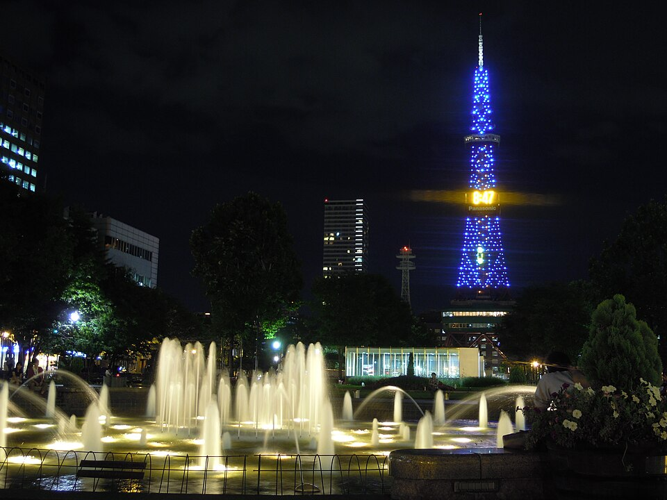
JP01-01 · 大通公園＋札幌電視塔
作者／署名：Qiuqizhenghong
授權：CC BY-SA 3.0
作品名稱：Sapporo TV Tower and Odori park.JPG
縮小尺寸；網頁以 4:3 裁切顯示。裁切顯示版本沿用原圖授權。
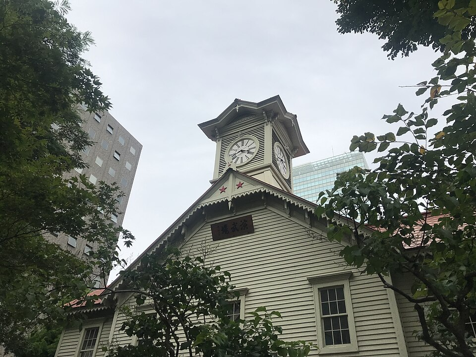
JP01-02 · 札幌市時計台
作者／署名：ノボホショコロトソ
授權：CC BY 4.0
作品名稱：Sapporo Clock Tower 札幌市時計台 06.jpg
縮小尺寸；網頁以 4:3 裁切顯示。裁切顯示版本沿用原圖授權。
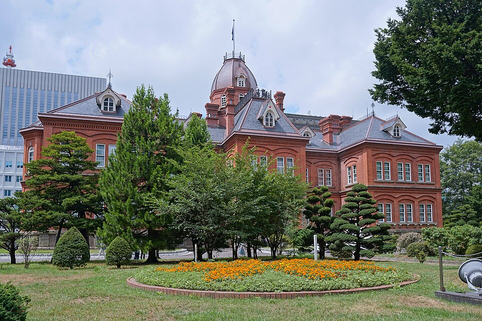
JP01-03 · 北海道廳舊本廳舍
作者／署名：掬茶
授權：CC BY-SA 4.0
作品名稱：Former Hokkaido Government Office 202507.jpg
縮小尺寸；網頁以 4:3 裁切顯示。裁切顯示版本沿用原圖授權。
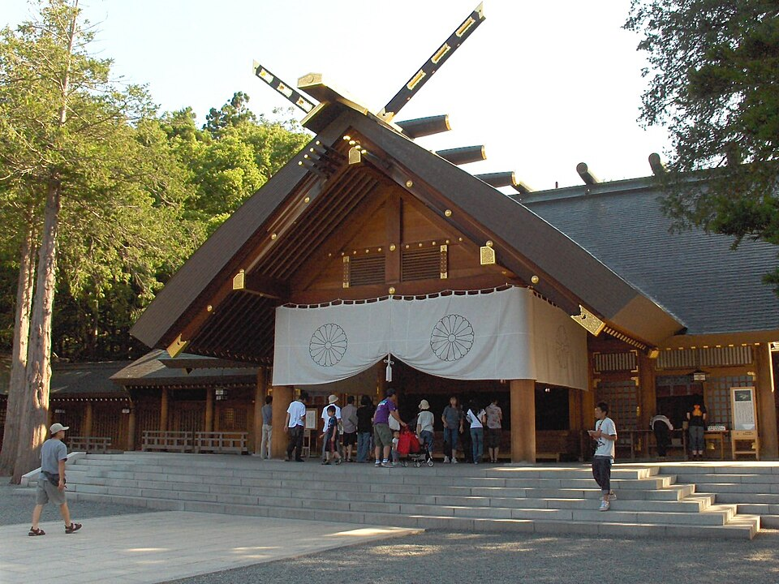
JP01-04 · 北海道神宮
作者／署名：Daigaku2051
授權：CC BY-SA 3.0
作品名稱：Hokkaido_Jingu.JPG
縮小尺寸；網頁以 4:3 裁切顯示。裁切顯示版本沿用原圖授權。
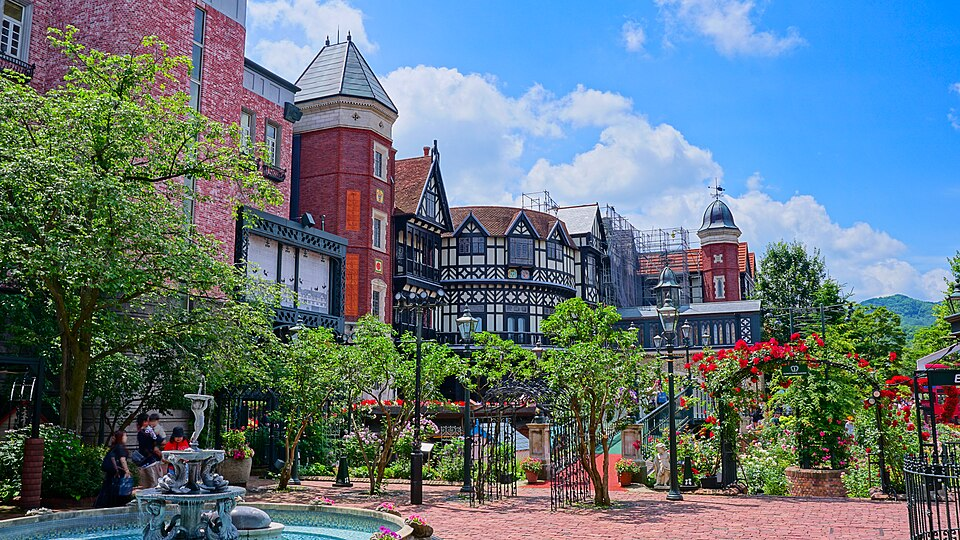
JP01-05 · 白色戀人公園
作者／署名：掬茶
授權：CC BY-SA 4.0
作品名稱：Shiroi_Koibito_Park_20260703o.jpg
縮小尺寸；網頁以 4:3 裁切顯示。裁切顯示版本沿用原圖授權。
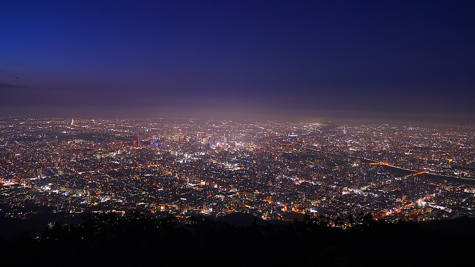
JP01-06 · 藻岩山
作者／署名：掬茶
授權：CC BY-SA 4.0
作品名稱：City nightscape of Sapporo from Mt. Moiwa 20260703a.jpg
縮小尺寸；網頁以 4:3 裁切顯示。裁切顯示版本沿用原圖授權。

JP01-07 · 小樽運河
作者／署名：Flickr user: Chi ing https://www.flickr.com/people/davelau/
授權：CC BY 2.0
作品名稱：Otaru_Hokkaido_Japan.jpg
縮小尺寸；網頁以 4:3 裁切顯示。裁切顯示版本沿用原圖授權。
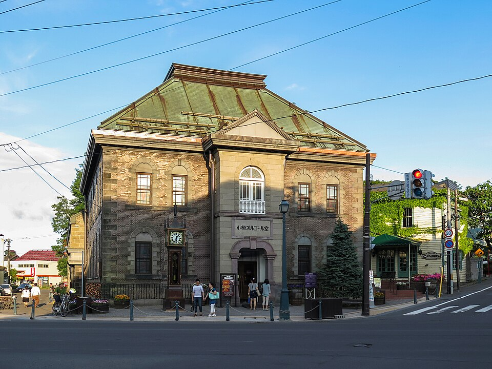
JP01-08 · 小樽堺町通＋音樂盒堂
作者／署名：Wpcpey
授權：CC BY 4.0
作品名稱：Otaru_Music_Box_Museum_2014.jpg
縮小尺寸；網頁以 4:3 裁切顯示。裁切顯示版本沿用原圖授權。
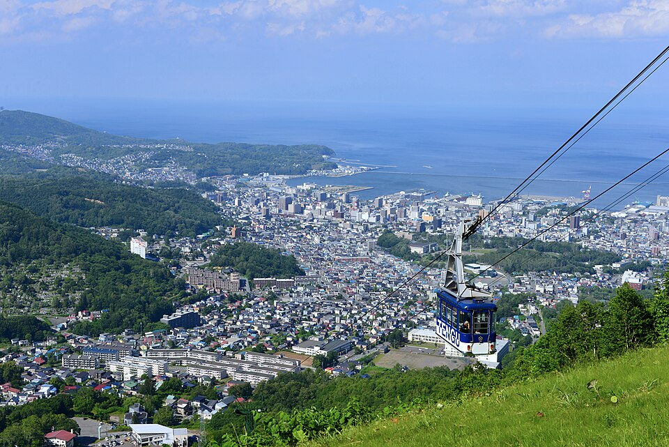
JP01-09 · 小樽天狗山
作者／署名：皓月旗
授權：CC BY-SA 4.0
作品名稱：Otaru-Tenguyama 20220625.jpg
縮小尺寸；網頁以 4:3 裁切顯示。裁切顯示版本沿用原圖授權。
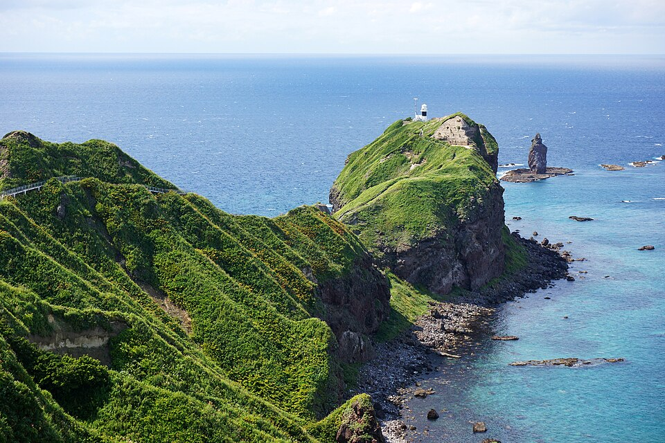
JP01-10 · 積丹半島・神威岬
作者／署名：663highland
授權：CC BY 2.5
作品名稱：130823_Cape_Kamui_Shakotan_Hokkaido_Japan01s3.jpg
縮小尺寸；網頁以 4:3 裁切顯示。裁切顯示版本沿用原圖授權。
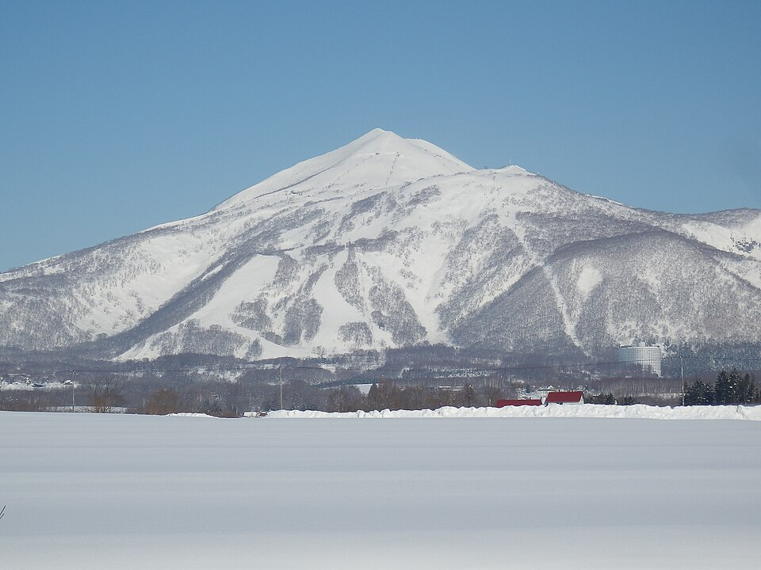
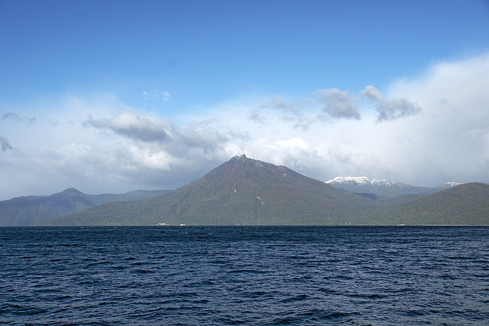
JP01-12 · 支笏湖
作者／署名：663highland
授權：CC BY 2.5
作品名稱：Lake_Shikotsu_Mt_Eniwa-dake03n4272.jpg
縮小尺寸；網頁以 4:3 裁切顯示。裁切顯示版本沿用原圖授權。
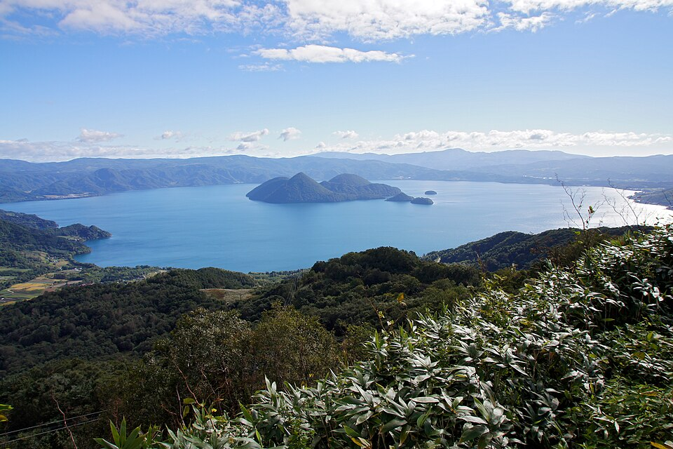
JP01-13 · 洞爺湖
作者／署名：663highland
授權：CC BY 2.5
作品名稱：130922_Lake_Toya_Toyako_Hokkaido_Japan03s3.jpg
縮小尺寸；網頁以 4:3 裁切顯示。裁切顯示版本沿用原圖授權。

JP01-14 · 有珠山＋昭和新山
作者／署名：663highland
授權：CC BY 2.5
作品名稱：130922_Showa-shinzan_Sobetsu_Hokkaido_Japan01s3.jpg
縮小尺寸；網頁以 4:3 裁切顯示。裁切顯示版本沿用原圖授權。
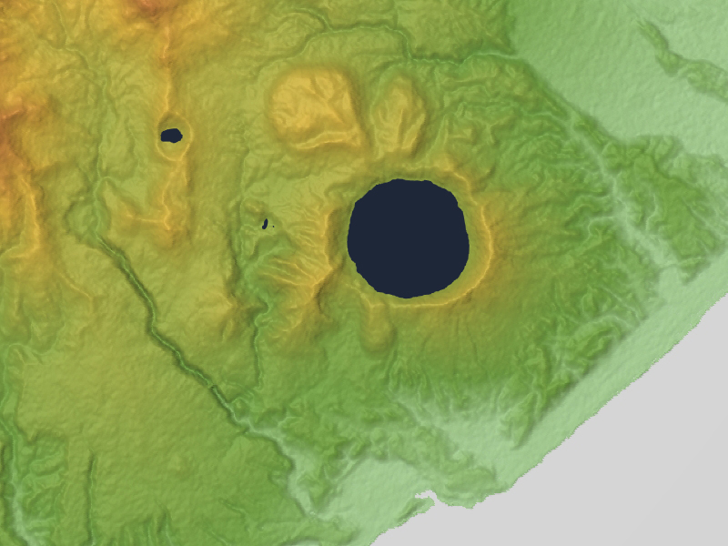
JP01-15 · 登別地獄谷＋溫泉街
作者／署名：User:欅
授權：CC BY-SA 3.0
作品名稱：Noboribetsu hot spring jigokudani.JPG
縮小尺寸；網頁以 4:3 裁切顯示。裁切顯示版本沿用原圖授權。
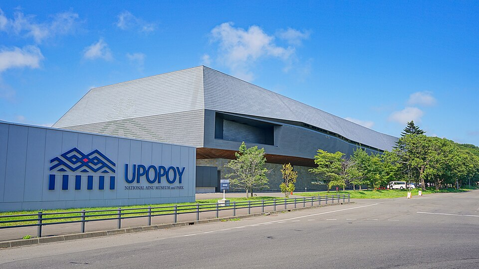
JP01-16 · UPOPOY民族共生象徵空間
作者／署名：掬茶
授權：CC BY-SA 4.0
作品名稱：UPOPOY_202608.jpg
縮小尺寸；網頁以 4:3 裁切顯示。裁切顯示版本沿用原圖授權。
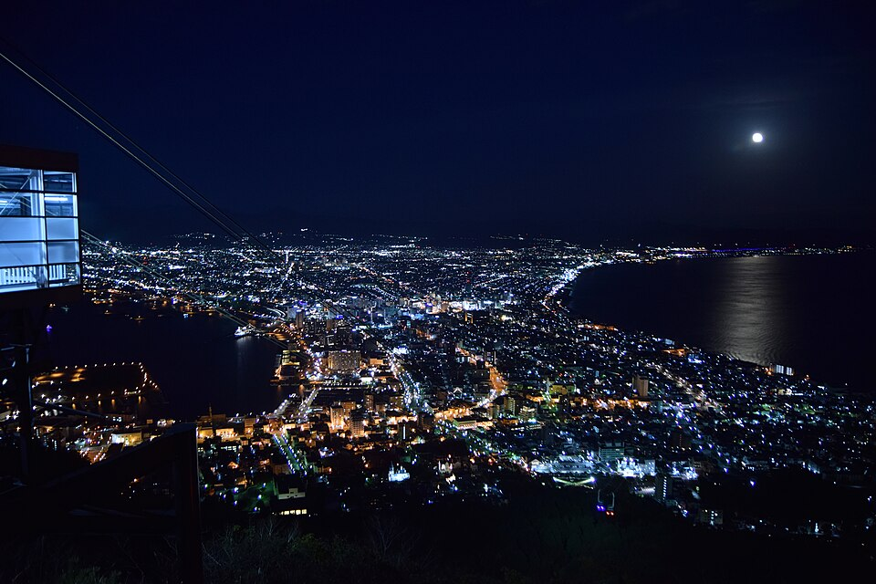
JP01-17 · 函館山
作者／署名：Raita Futo from Tokyo, Japan
授權：CC BY 2.0
作品名稱：Hakodate night view (51973442055).jpg
縮小尺寸；網頁以 4:3 裁切顯示。裁切顯示版本沿用原圖授權。
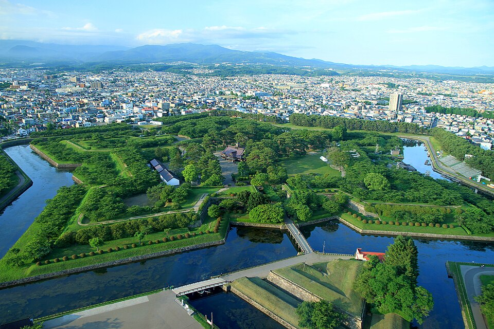
JP01-18 · 五稜郭公園＋五稜郭塔
作者／署名：京浜にけ at Japanese Wikipedia
授權：CC BY-SA 3.0
作品名稱：Hakodate_Goryokaku_Panorama_1.JPG
縮小尺寸；網頁以 4:3 裁切顯示。裁切顯示版本沿用原圖授權。
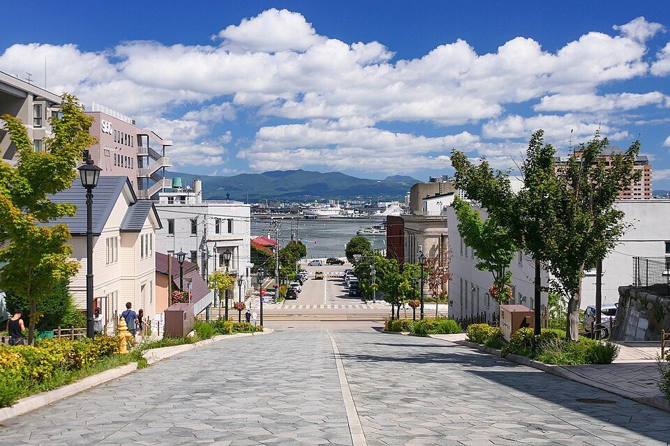
JP01-19 · 函館元町＋八幡坂
作者／署名：MaedaAkihiko
授權：CC0
作品名稱：Hakodate Hachiman-zaka 2024.jpg
縮小尺寸；網頁以 4:3 裁切顯示。裁切顯示版本沿用原圖授權。
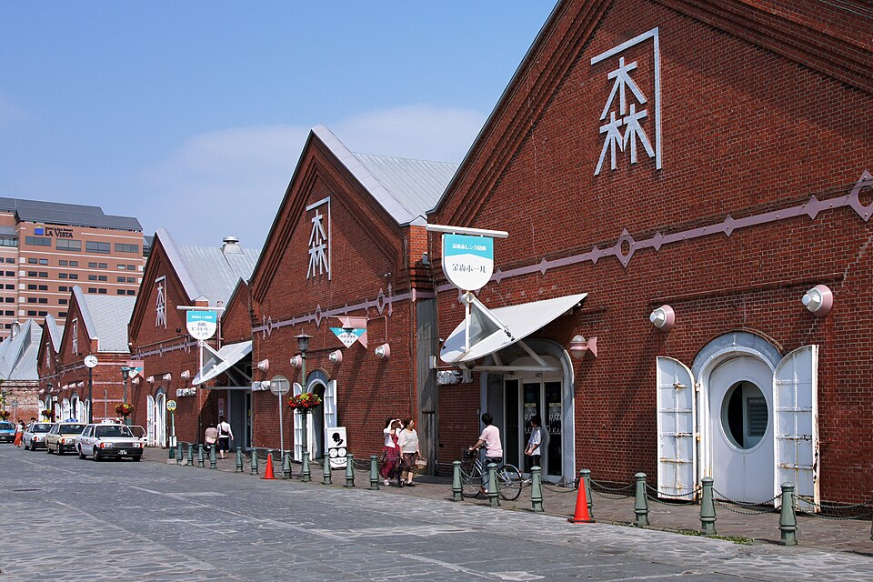
JP01-20 · 金森紅磚倉庫
作者／署名：663highland
授權：CC BY 2.5
作品名稱：Kanemori_Red_Brick_Warehouse_Hakodate_Hokkaido_pref_Japan04n.jpg
縮小尺寸；網頁以 4:3 裁切顯示。裁切顯示版本沿用原圖授權。
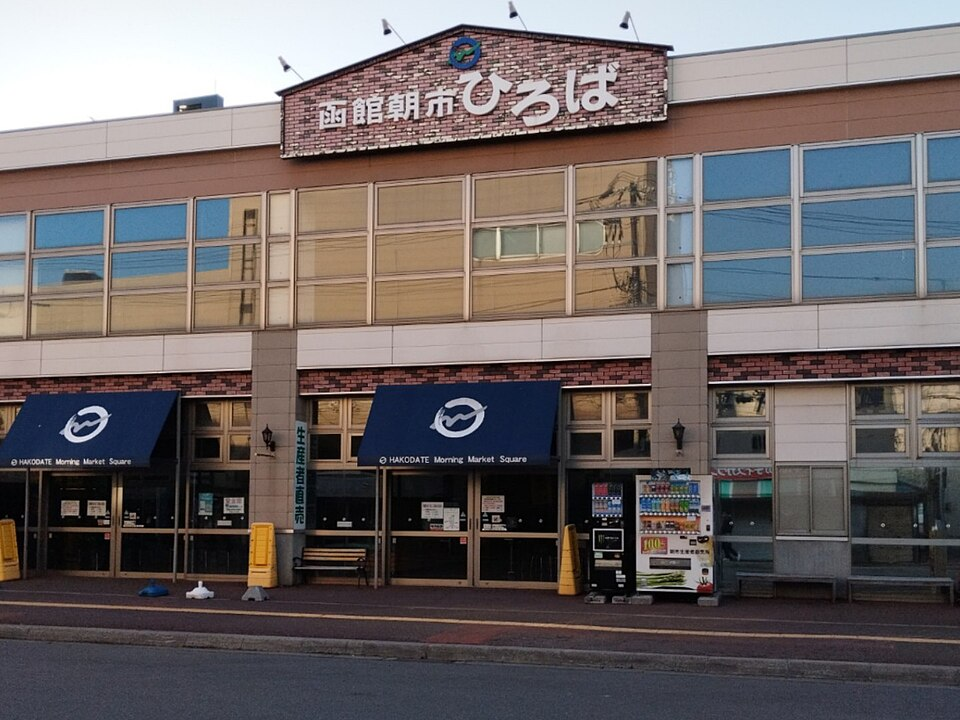
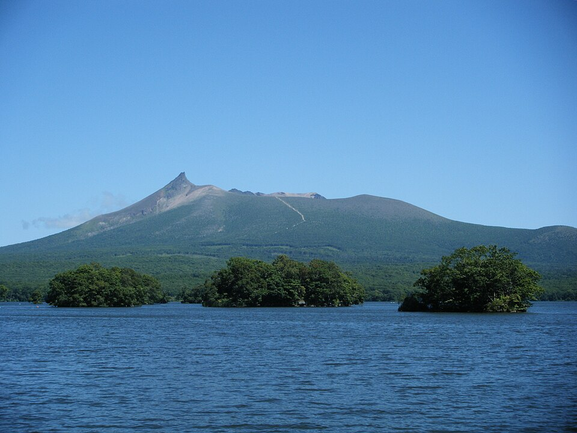
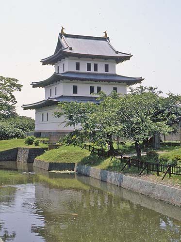
JP01-23 · 松前城＋松前公園
作者／署名：en:User:Fg2
作品名稱：MatsumaeJo.jpg
縮小尺寸；網頁以 4:3 裁切顯示。裁切顯示版本沿用原圖授權。
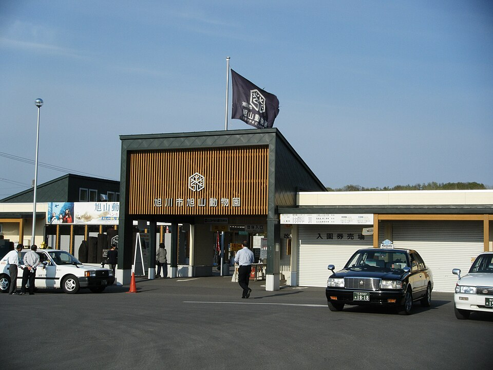
JP01-24 · 旭山動物園
作者／署名：欅 (Keyaki)
授權：CC BY-SA 3.0
作品名稱：Asahiyama_zoo_entrance.jpg
縮小尺寸；網頁以 4:3 裁切顯示。裁切顯示版本沿用原圖授權。

JP01-25 · 美瑛青池
作者／署名：MaedaAkihiko
授權：CC BY-SA 4.0
作品名稱：Biei_Blue-pond.jpg
縮小尺寸；網頁以 4:3 裁切顯示。裁切顯示版本沿用原圖授權。
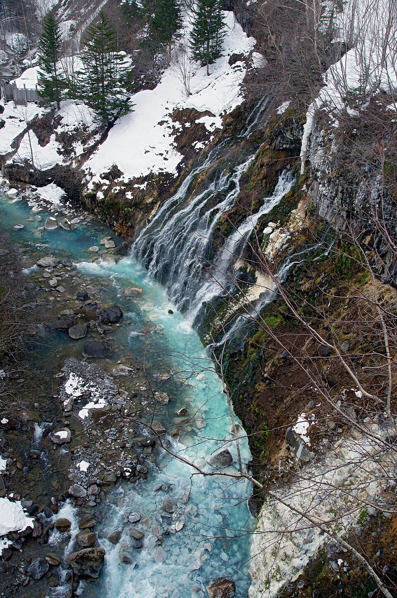
JP01-26 · 白鬚瀑布
作者／署名：663highland
授權：CC BY 2.5
作品名稱：Shirahige-no-taki_Shirogane_Onsen_Biei_Hokkaido_Japan01s3.jpg
縮小尺寸；網頁以 4:3 裁切顯示。裁切顯示版本沿用原圖授權。
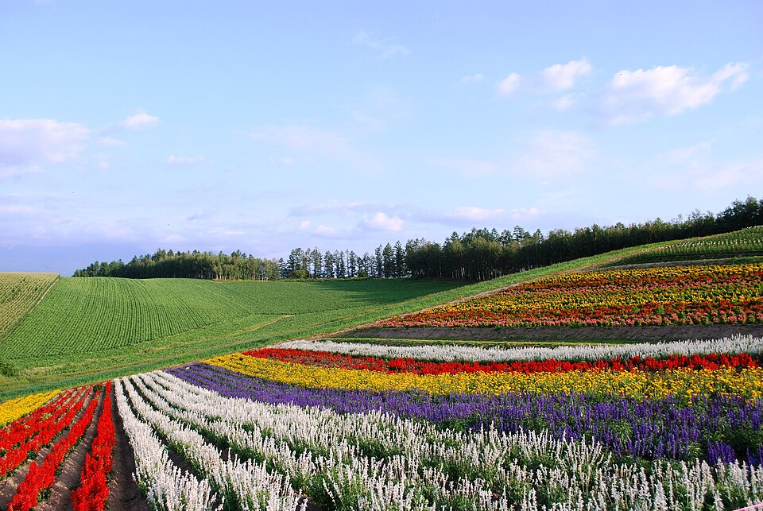
JP01-27 · 四季彩之丘
作者／署名：Captain76
作品名稱：四季彩の丘-01.JPG
縮小尺寸；網頁以 4:3 裁切顯示。裁切顯示版本沿用原圖授權。
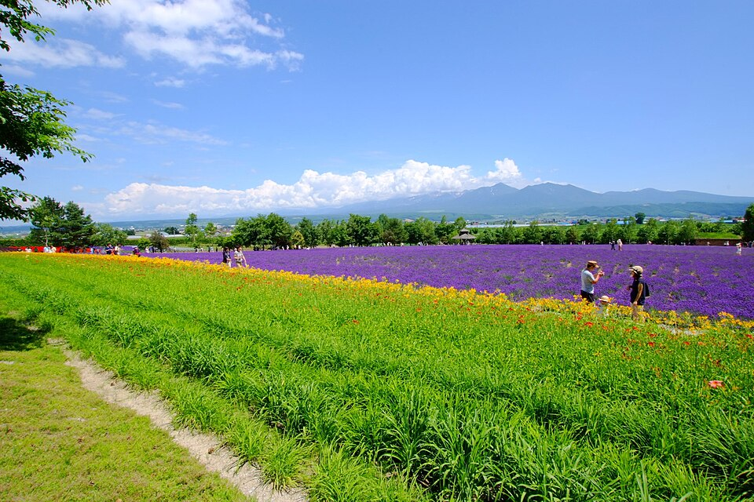
JP01-28 · 富田農場
作者／署名：t-konno
授權：CC BY-SA 3.0
作品名稱：ファーム富田（Farm_Tomita）_-_panoramio_(2).jpg
縮小尺寸；網頁以 4:3 裁切顯示。裁切顯示版本沿用原圖授權。
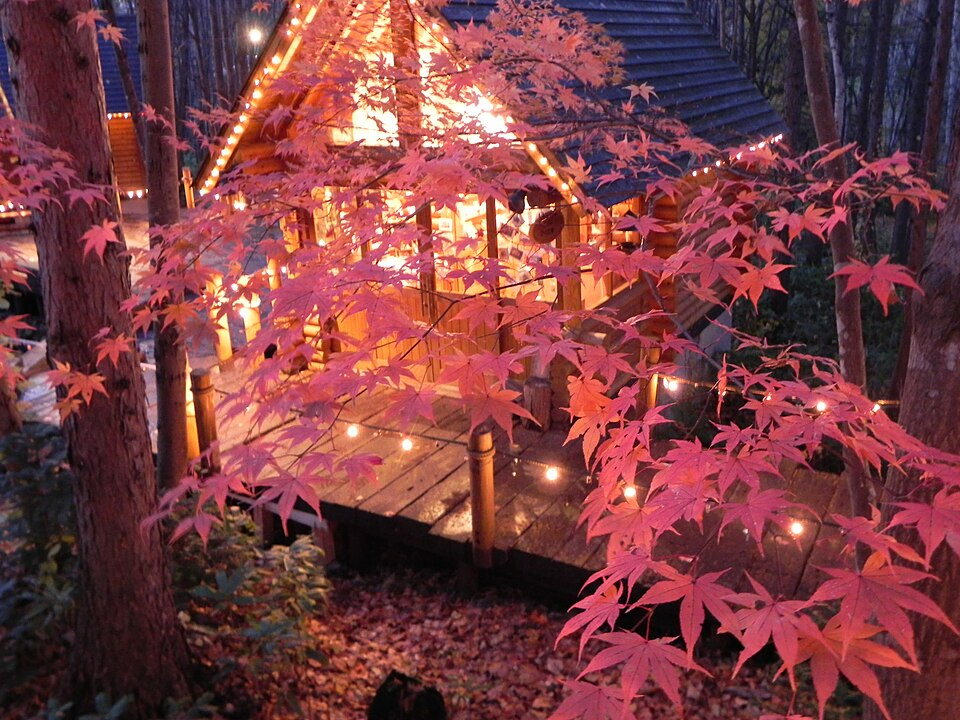
JP01-29 · 富良野精靈露台
作者／署名：pakku
授權：CC BY 3.0
作品名稱：ニングルの秋（Fall of Ninguru） - panoramio.jpg
縮小尺寸；網頁以 4:3 裁切顯示。裁切顯示版本沿用原圖授權。
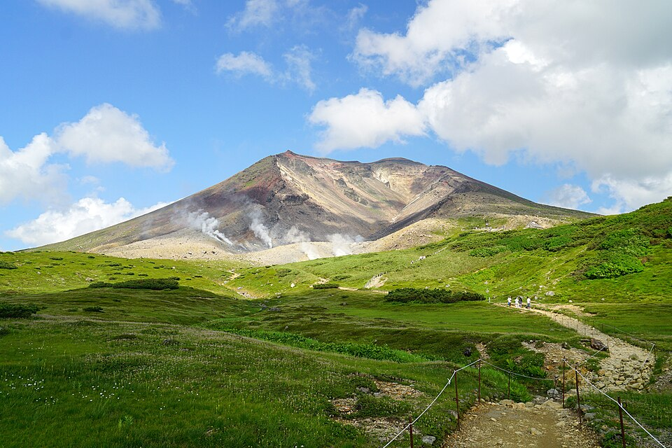
JP01-30 · 旭岳
作者／署名：663highland
授權：CC BY 2.5
作品名稱：140724_Asahi-dake_Hokkaido_Japan01s3.jpg
縮小尺寸；網頁以 4:3 裁切顯示。裁切顯示版本沿用原圖授權。
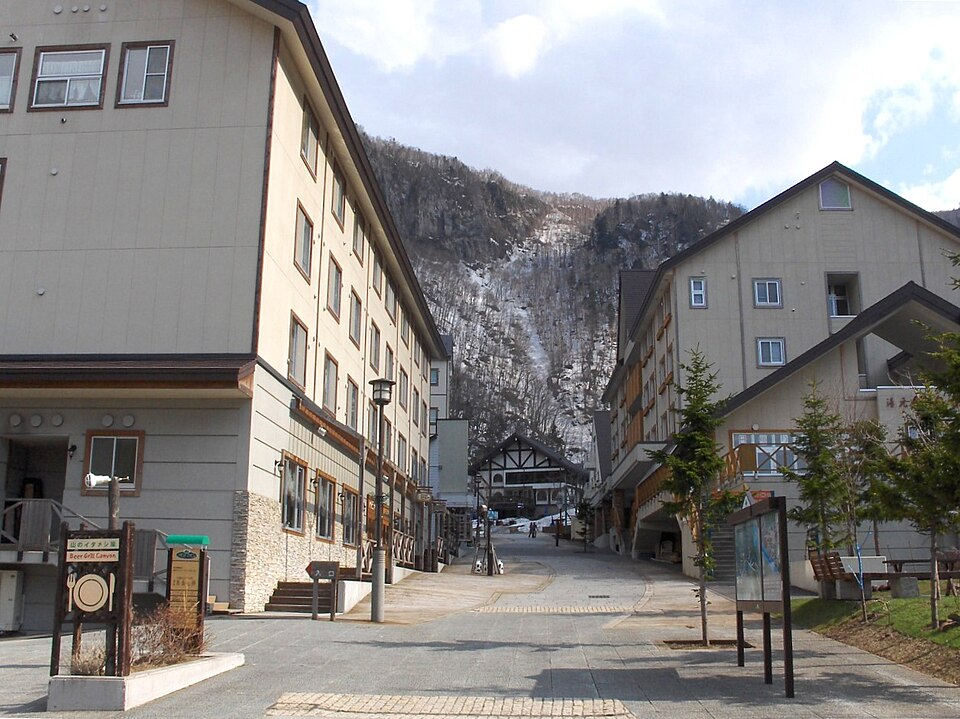
JP01-31 · 層雲峽
作者／署名：lienyuan lee
授權：CC BY 3.0
作品名稱：層雲峽 Sounkyo - panoramio.jpg
縮小尺寸；網頁以 4:3 裁切顯示。裁切顯示版本沿用原圖授權。
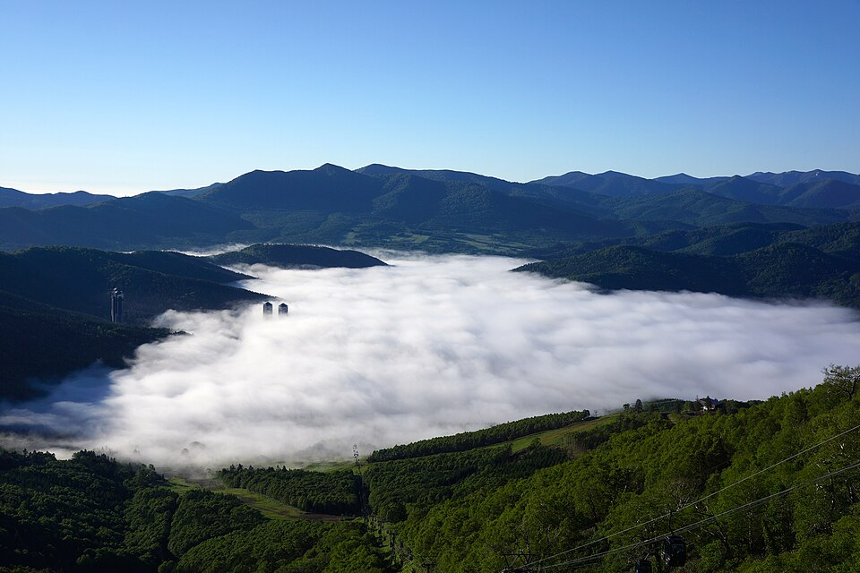
JP01-32 · TOMAMU雲海平台
作者／署名：Kentaro Ohno
授權：CC BY 2.0
作品名稱：UNKAI TERRACE.jpg
縮小尺寸；網頁以 4:3 裁切顯示。裁切顯示版本沿用原圖授權。
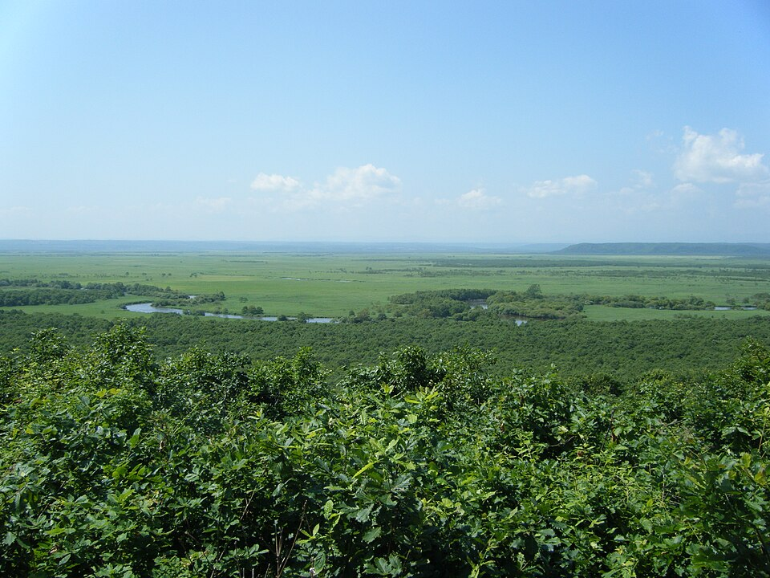
JP01-33 · 釧路濕原
作者／署名：欅 (Keyaki)
授權：CC BY-SA 3.0
作品名稱：Kushirositsugen_Hosooka_Tenboudai01.jpg
縮小尺寸；網頁以 4:3 裁切顯示。裁切顯示版本沿用原圖授權。
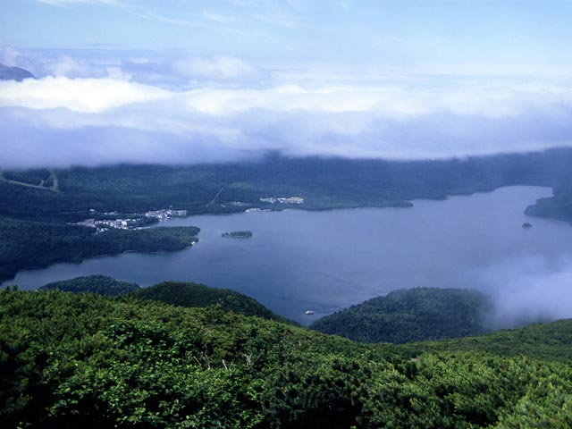
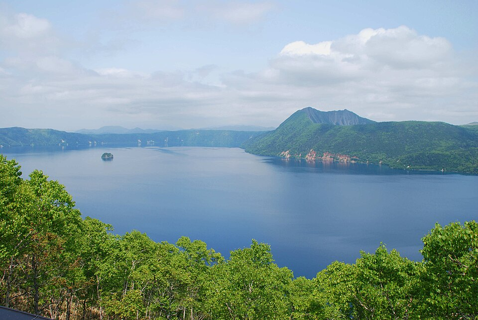
JP01-35 · 摩周湖
作者／署名：Miya.m
授權：CC BY-SA 3.0
作品名稱：Hokkaido,_Japan,_Lake_Mashū,_2008.jpg
縮小尺寸；網頁以 4:3 裁切顯示。裁切顯示版本沿用原圖授權。
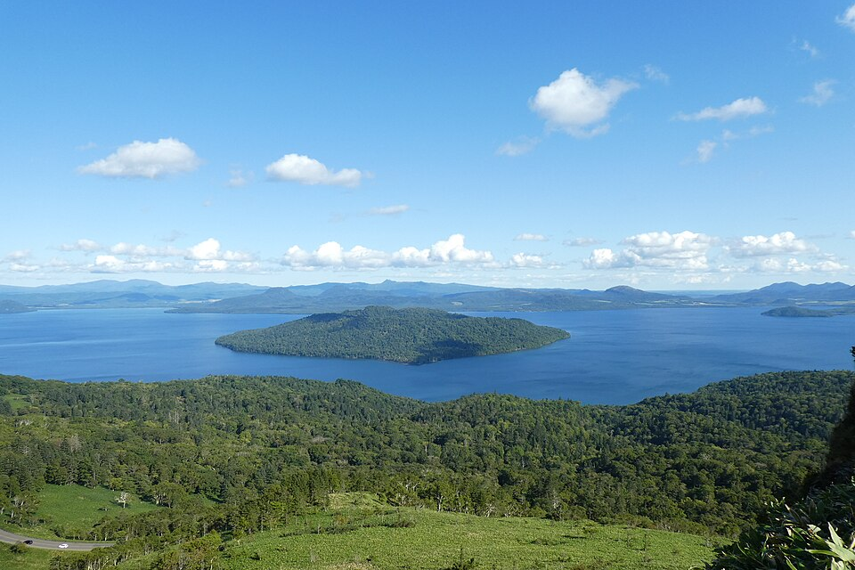
JP01-36 · 屈斜路湖
作者／署名：切干大根
授權：CC BY-SA 4.0
作品名稱：Lake_Kussharoko_Bihoro_pass.jpg
縮小尺寸；網頁以 4:3 裁切顯示。裁切顯示版本沿用原圖授權。
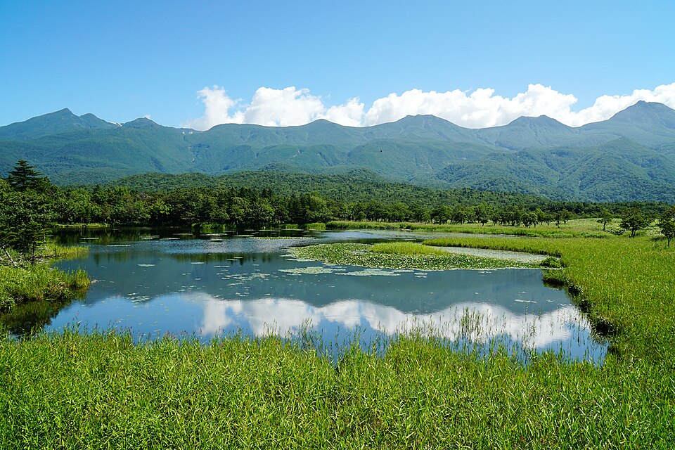
JP01-37 · 知床五湖
作者／署名：663highland
授權：CC BY 2.5
作品名稱：140829_Ichiko_of_Shiretoko_Goko_Lakes_Hokkaido_Japan01s5.jpg
縮小尺寸；網頁以 4:3 裁切顯示。裁切顯示版本沿用原圖授權。
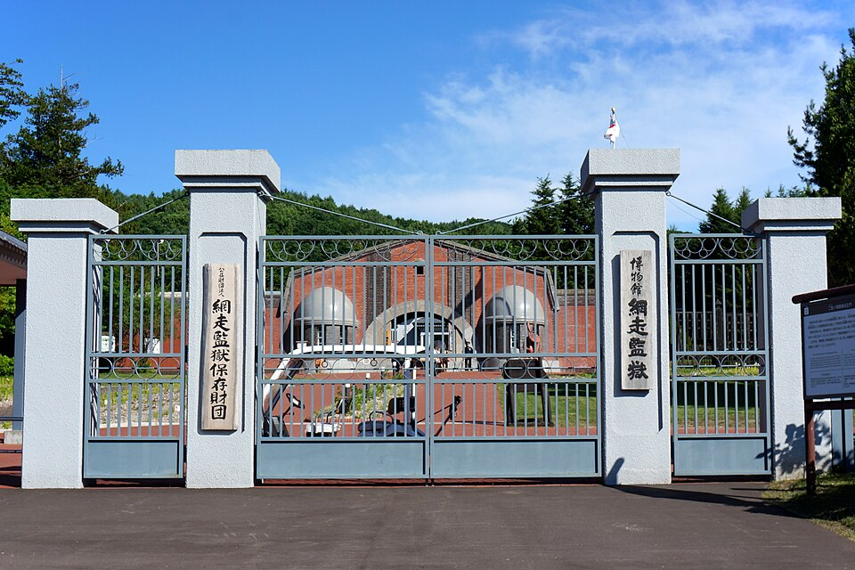
JP01-38 · 博物館網走監獄
作者／署名：663highland
授權：CC BY 2.5
作品名稱：130713_Abashiri_Prison_Museum_Abashiri_Hokkaido_Japan04n.jpg
縮小尺寸；網頁以 4:3 裁切顯示。裁切顯示版本沿用原圖授權。
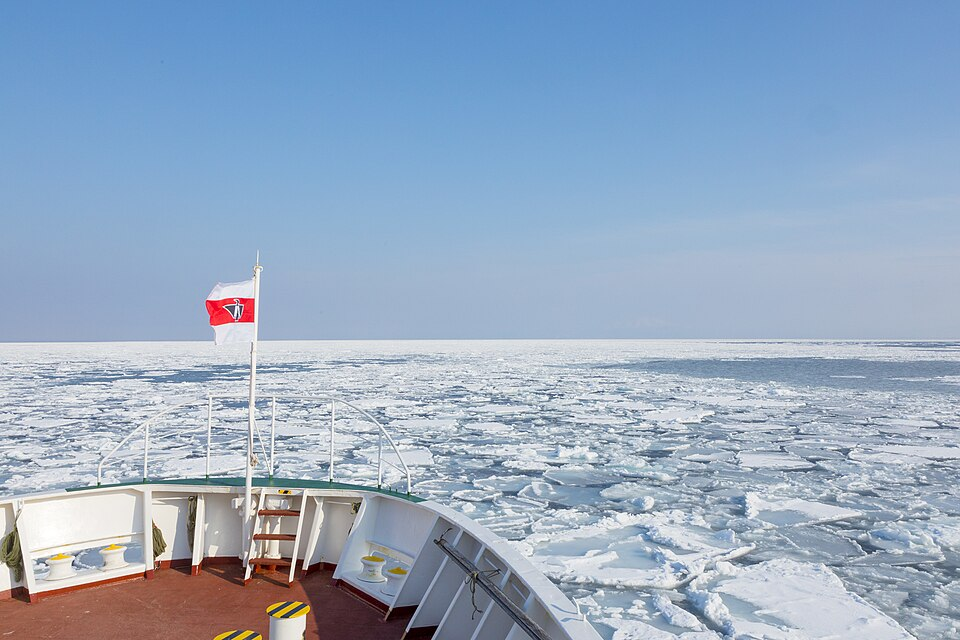
JP01-39 · 網走流冰觀光船
作者／署名：kkawamura
授權：CC BY 4.0
作品名稱：Hokkaido-Abashiri Drift Icebreaker Ship Aurora-xl.jpg
縮小尺寸；網頁以 4:3 裁切顯示。裁切顯示版本沿用原圖授權。
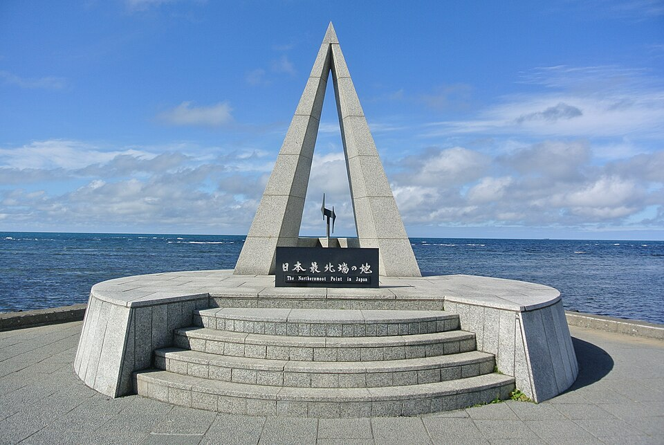
JP01-40 · 宗谷岬
作者／署名：Suicasmo
授權：CC BY-SA 4.0
作品名稱：The northernmost point of Japan monument in Soya cape.jpg
縮小尺寸；網頁以 4:3 裁切顯示。裁切顯示版本沿用原圖授權。
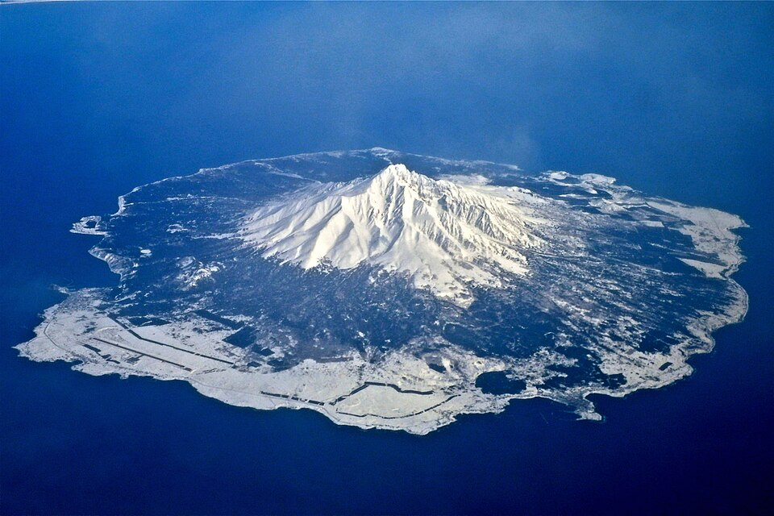
JP01-41 · 利尻島
作者／署名：Wikicommonsjoker
授權：CC BY-SA 3.0
作品名稱：Rishiriislandairplane.jpg
縮小尺寸；網頁以 4:3 裁切顯示。裁切顯示版本沿用原圖授權。
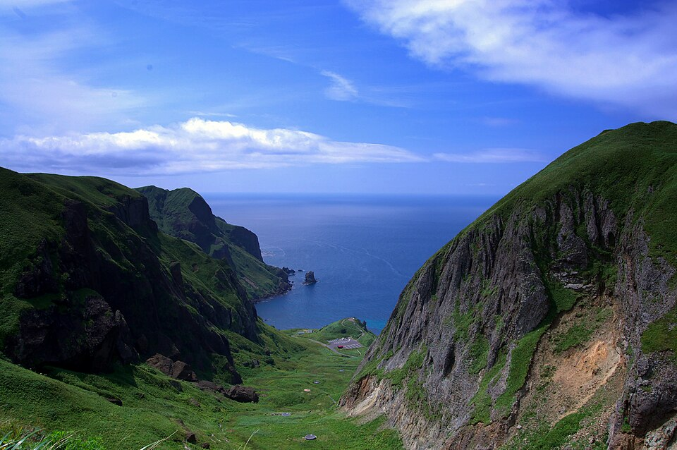
JP01-42 · 禮文島
作者／署名：hoge asdf
授權：CC BY 2.0
作品名稱：Rebun Island (7805402080).jpg
縮小尺寸；網頁以 4:3 裁切顯示。裁切顯示版本沿用原圖授權。
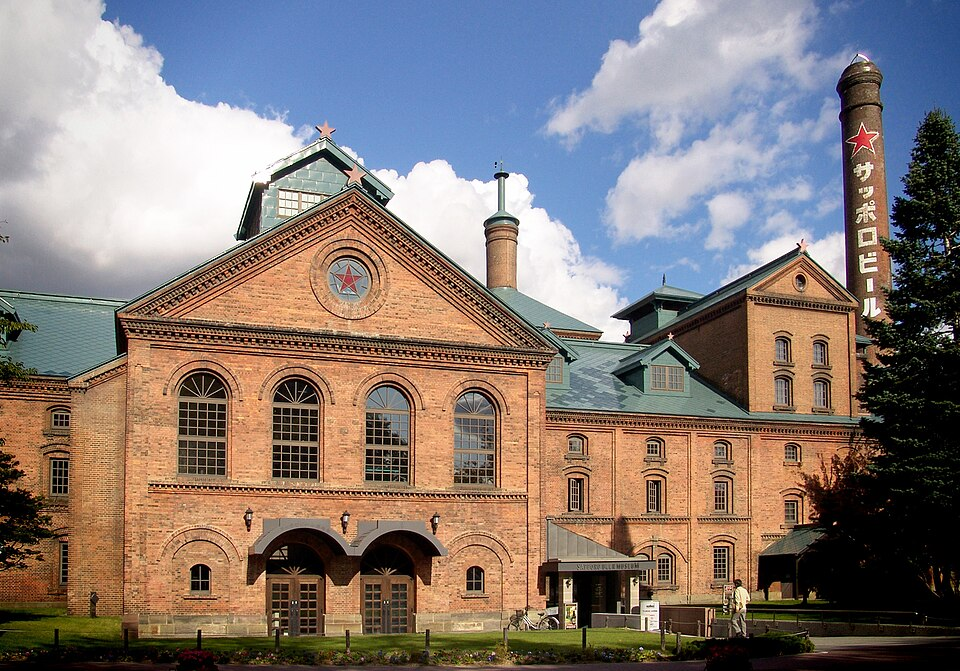
JP01-43 · 札幌啤酒博物館
作者／署名：MIKI Yoshihito derivative work: MrPanyGoff
授權：CC BY 2.0
作品名稱：Sapporo_Beer_Museum.jpg
縮小尺寸；網頁以 4:3 裁切顯示。裁切顯示版本沿用原圖授權。
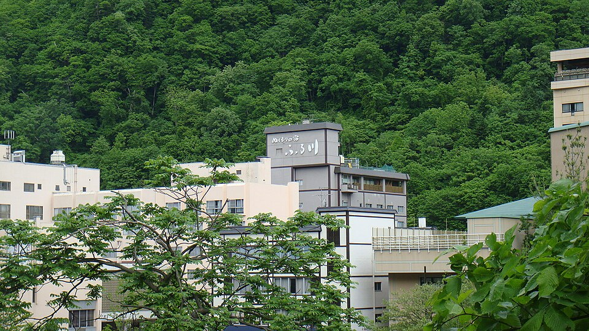
JP01-44 · 定山溪溫泉
作者／署名：David McKelvey from Brisbane, Australia
授權：CC BY 2.0
作品名稱：Jozankei Onsen 01.jpg
縮小尺寸；網頁以 4:3 裁切顯示。裁切顯示版本沿用原圖授權。
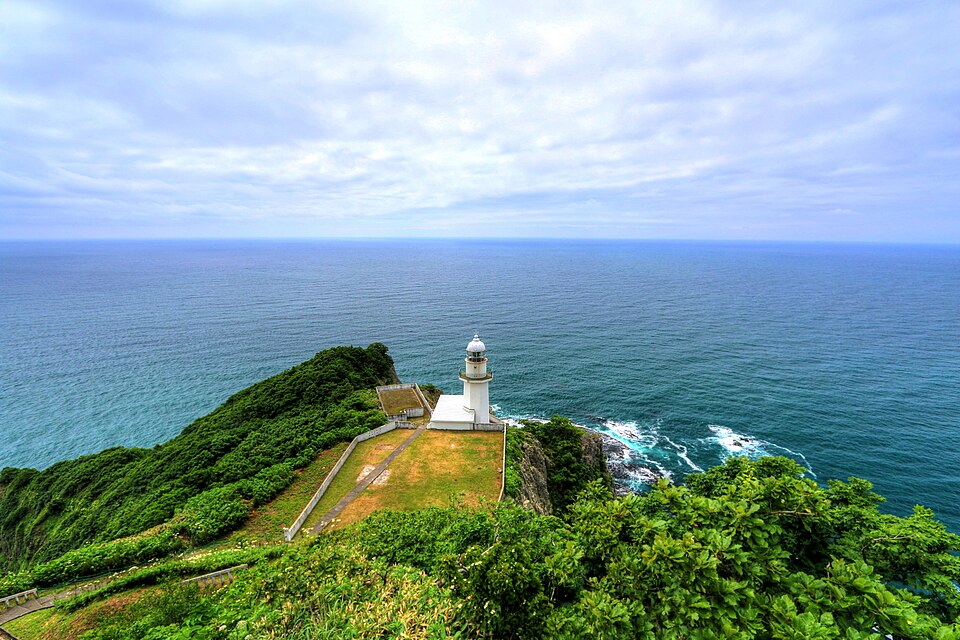